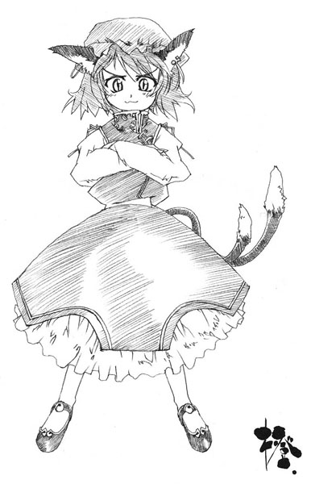

Beast
Animal with Too Much Power and Wisdom
Main info
Usual threat level: High
Frequency of encounter: Medium
Variety: High
Places likely to be encountered: Anywhere
Times likely to be encountered: Anytime
Characteristics
At first glance they seem to be regular animals, but they are intelligent enough to understand human speech and have unusually high physical abilities, plus some of them can use sorcery.
These kinds of animals are known as Beasts.
Many of them act like leaders for normal animals.
Characteristically, we can say they are very physically orientated.
They possess superior physical prowess, but in contrast it is difficult for them to be restored if their bodies are destroyed.
Unlike normal youkai, they're resistant against mental attacks.
Usually, their shape, personality and powers are strongly influenced by the animal from which they originated.
The unity within their species is strong, and they won't bear other member of their species to face hardships.
They tend to be omnivores who prefer to eat meat, especially human meat.
It is said that animals that have eaten too many virtuous humans become beasts.
Many of them are very ferocious, and since the frequency of encountering one is somewhat high, you must be careful of this type of youkai.
Also, more tails generally means higher youkai power, so you can use this to estimate their strength.
Potential Harm
Injury, Becoming Prey
Most of their danger comes from direct attacks.
Even if they can only scratch with their sharp claws or bite with their teeth, they are a threat to humans.
It's possible to be injured even if you don't directly get involved with beasts. For example, if you catch a rabbit, a youkai rabbit may take revenge on you if it notices.
Also, you must be even more careful of beasts that can use sorcery.
Countermeasures
Because of the difference in physical abilities, humans are at an overwhelming disadvantage in a frontal attack.
However, since many of them aren't too smart in general, they often fall into traps set by humans.
Sometimes they'll get caught in rabbit traps.
If one of them is threatening to fight you, it's probably because it's hungry.
If you have food on hand, there's a good chance you can escape by offering it to them and running.
In the worst case, if you don't have any food on hand, or you meet them one after another and you've just given away your food, all you can do is pray.
Chen
Black Cat of Ill Omen

Ability: Use of sorcery
Threat level: Medium
Human friendship level: Normal
Main place of activity: Animal trails, Youkai Mountain
A bakeneko whose appearance and threat level are the most standard of the youkai beasts.
Even so, Chen is also a shikigami in service to Ran Yakumo (explained later).
She is a classic bakeneko with long claws and two long tails.
While possessed in a shikigami state, she can use various kinds of sorcery and is extremely dangerous, but is weak to water.
If she is doused in water, she will cease to be a shikigami, and become a normal bakeneko.
As a normal bakeneko, she'll become more feral and resort to more physical means such as biting and clawing, but she still hates water.
If you douse her again, her movements will further falter.
She looks the same as a shikigami and as a bakeneko.
She appears smart because she is capable of understanding human speech and uses various kinds of sorcery when possessed, but in reality she possesses the intellect of a human child about the age she appears.
She spends most of her time on Youkai Mountain, and occasionally comes down to the human village to attack people.
However, it's said she follows the will of Ran Yakumo and Yukari Yakumo when she is serving as a shikigami.
Eyewitness Reports
There was a huge cat lying inside the kotatsu. It was about as big as a person. No, really!
Cats curl up under the kotatsu in winter.
A bunch of cats had gathered behind our house. We splashed them with water and they ran off.
It seems the cats assemble regularly when people aren't watching.
It appears that the leader of these gatherings is this bakeneko.
Sometimes the pillars on our house are all scratched up. I bet it's because of this bakeneko.
She might be sharpening her claws, but one among the class of bakeneko would probably just use nail clippers or scissors.
Countermeasures
Bakeneko are very nimble, and they're also quite strong.
If she is serious in a fight, even running away would be difficult.
However, she has many weaknesses.
First, she hates water.
She won't go out if it's raining, and if you run out to the middle of a river, she probably wouldn't pursue.
She's also weak against catnip.
If you sprinkle some dried catnip around, she'll quickly lose all interest in fighting.
It's probably best to keep some dried catnip with you if you have to walk down animal trails.
The types of sorcery she uses focus on using speed and tricky movements to confuse her opponents.
For example, if you think you see her dash off to the left, she'll attack from the right.
This is a technique that relies on speed and precise movement, so it's very similar to sleight of hand.
Ran Yakumo
The Scheming Nine-Tailed Fox

Ability: Use of shikigami
Threat level: High
Human friendship level: Normal
Main place of activity: Anywhere
It is said that the more tails a beast has, the more powerful it is, and the longer they are, the more clever it becomes.
The widely regarded authority among beasts is this nine-tailed fox youkai, Ran Yakumo.
A fox with nine large tails, her prestigious pedigree displays her divinity.
Ran is Yukari's shikigami.
As a shikigami, Ran must do whatever Yukari commands, but she is also capable of using shikigami of her own.
Ran's shikigami is Chen.
However, Chen is too unreliable for Ran to depend upon.
Ran is incredibly intelligent, and especially good at mathematics.
It is said that she is capable of doing complex calculations far above anything a human can attempt in an instant.
However, her forte is the analysis of existing phenomena, rather than that of new concepts.
She lives in the same house as Yukari Yakumo, and appears in Gensokyo in her place.
Eyewitness Reports
That fox came here a while ago to buy some fried tofu. She properly paid for it and everything, even though she's an animal
Once you reach a certain level of intelligence, you feel ashamed at acts such as theft.
This is true for both humans and youkai.
Lately, a nine-tailed fox has been wandering around the edge of the village like it's been sizing up something. I wonder what the youkai are planning; it's scary.
There's no need for concern.
This fox is merely making sure no untoward changes occur in Gensokyo, that the border experiences no degradation and performing other such checks.
These duties were originally performed by Yukari Yakumo, but it seems that Yukari grew tired of them and Ran now performs them in her stead.
Her tails look so warm.
Of course they're warm.
She's the strongest beast, after all.
Countermeasures
She's intelligent, powerful and very fast.
You should not challenge her unless you are extremely confident in your skills.
Fortunately, she has a gentle personality and she takes no pleasure in self-aggrandizing combat, so one is unlikely to be attacked beyond reason.
However, you must be prepared to do battle if you disrupt her work.
She has no particular weaknesses, but she is extremely fond of fried tofu, so you may be able to avoid combat by offering her some.
It's probably wise to carry fried tofu with you as a good-luck charm when walking animal trails.
She appears in the human village from time to time, but there's no need to fear her then.
She has only come to shop.
Reisen Udongein Inaba
Lunatic Red Eyes

Ability: Manipulation of insanity
Threat level: Unknown
Human friendship level: Normal
Main place of activity: Bamboo Forest of the Lost
Reisen Udongein Inaba, the youkai rabbit whose dissimilitude with other beasts makes her all the more unusual.
In contrast to most beasts' feral nature, she has an upright posture.
Her movement is rather slow for a beast as well.
Furthermore, she does not attack humans.
In fact, she tends to avoid them.
She has extremely long ears and hair.
She is certainly one-of-a-kind among the youkai rabbits in all respects.
Tewi Inaba acts as leader of the rabbits, but she gives orders to Tewi.
This makes her the de facto leader of the rabbits.
It's said you'll go mad if you look directly into her red eyes.
In addition, her voice is said to have unusual effects as well. For example, you may be unable to perceive what she's saying even if you hear her perfectly, or you may hear her as if she were whispering into your ears, even though she's far away.
Thanks to phenomena such as these, it's hard to have a true, direct conversation with her.
She can usually be found where she lives, at Eientei in the Bamboo Forest.
Beyond that, her routine is unknown, but occasionally she can be seen in the human village selling medicine.
She's well known for walking about with a large supply of dubious drugs.
Lunatic Ability
The ability to manipulate insanity is essentially the power to make you go mad, specifically, the power to control the waves that reside in all things.
Increasing the wavelengths, that is, making the subject carefree, results in an apathetic lethargy.
Decreasing the wavelengths, that is, bringing madness to the subject, results in emotional instability, and leaves the subject unable to converse with others.
Increasing the amplitude results in an excess of existence, which allows her to transmit thoughts no matter how far.
Decreasing the amplitude results in a rarefaction of existence, in which case one's voice will never reach another, no matter how close they are.
Synchronizing the waves' phases causes interference to vanish, which makes it impossible to touch anything.
Offsetting the phases negates existence, and completely hides the subject's form.
By using various effects such as these, she can induce madness.
Eyewitness Reports
It was early in the morning, and I'd gone to cut bamboo in the forest.
Suddenly, it felt as if all the bamboo was lookin' down on me.
My hips started achin', then the rest of my body, too.
Then, I saw a strange youkai rabbit.
She was lookin' at the sky and mutterin' under her breath.
It looked like she was talkin' to someone, but there was nothin' there but the fallin' moon ...
I decided to leave because it was gettin' creepy, but then she turned around and realized I was there.
And all of a sudden, she completely vanished.
I wonder if it was just a dream...
As this youkai rabbit acts in such a mysterious fashion, there is so much that is unknown about her.
Countermeasures
There are no reports of this youkai attacking humans.
However, she can't exactly be considered friendly, either. For example, whenever she comes to the human village to sell medicines, she disappears back into the forest as soon as her work has ended.
She seems to prefer the same sorts of foods that humans eat.
Even in this fashion she differs from most youkai.
However, one must make certain not to look directly into her red eyes.
Just like the full moon, they have a strange effect on humans.
Tewi Inaba
White Rabbit of Good Fortune

Ability: Can bring fortune to humans
Threat level: Low
Human friendship level: Normal
Main place of activity: Bamboo Forest of the Lost
Tewi Inaba is the youkai rabbit that acts as the leader of the wild rabbits.
She is a rabbit who has managed to live a long life by taking good care of her health.
She can assume human form and understand human speech.
This youkai rabbit is also known as the Rabbit of Good Fortune, and it's said that those who see her will be blessed with good luck.
However, not only is she very fleet-footed, but she spends much of her time in the Bamboo Forest, so it isn't very easy to spot her.
She has a very mischievous personality, but can be cowardly and shifty.
She is extremely emotional, to the point that her personality is not unlike a fairy's.
It is said she spends most of her time in the Bamboo Forest and lives at Eientei.
In fact, she has lived in the Bamboo Forest since before Eientei was built, and is said to be one of the longest living youkai in Gensokyo.
Eyewitness Reports
I finally found that rabbit in the bamboo forest just now! I'm sure Lady Luck will be visiting me from now on...
Good fortune does not last very long, so you may have exhausted your share by simply making it back safely from the forest.
Ah, rabbit meat is plain so it goes well with any other side dish.
Rabbit meat is just one kind of popular cuisine in Gensokyo
Even if I catch rabbits in my traps, there are never any youkai rabbits inside.
Of course, youkai rabbits are pretty clever.
Countermeasures
Due to her reputation as a bringer of good fortune, she is unusually popular among humans for a youkai, but one can't find her by ordinary means.
Her inclination to stay in the Bamboo Forest only compounds the problem.
Entering the forest to find this rabbit would certainly be reckless.
The dense fog and monotonous scenery in the bamboo forest confuses your sense of direction, and the forest is full of youkai, so it's unwise to enter it unprepared.
One might say that it would be good fortune enough in finding her.
It may be that good fortune only visits those who were fortunate to begin with.
Incidentally, compared to a four-leaf clover, her good fortune on the order of a forty-leaf clover.